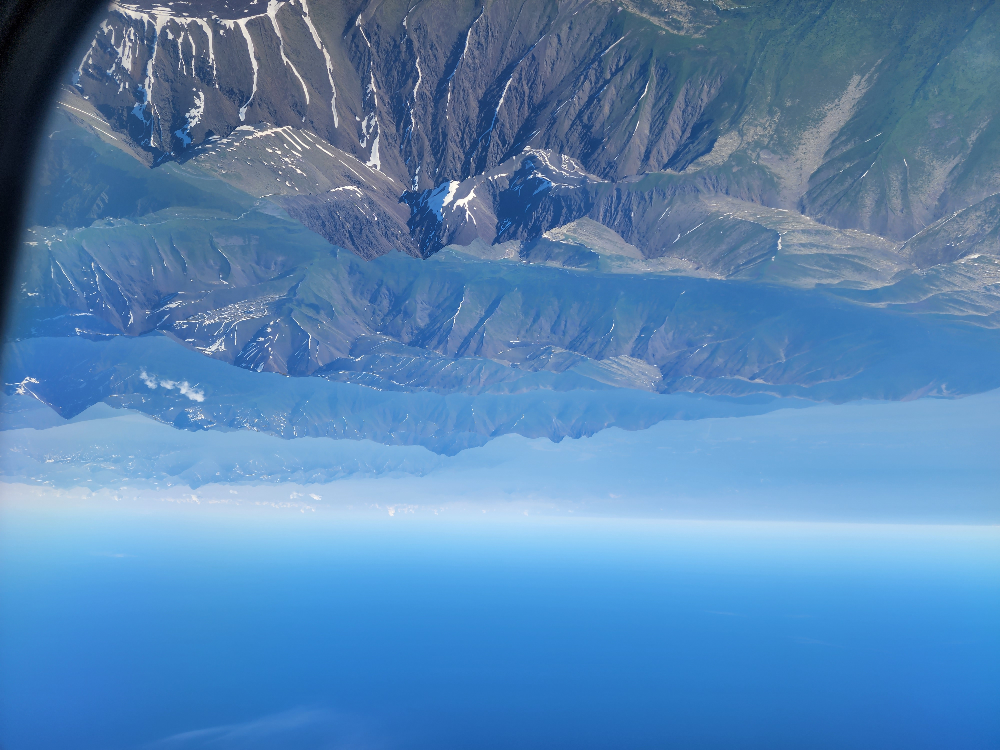

A big part of my identity is my home. I left my heart in Alaska three years ago and can't wait to go back. I took all these pictures myself.
A portion of the Chugach mountain range, taken off the back porch of my home.Pioneer Peak, the mountain I grew up under, taken on a hill in the valley below it. Taken on the same hill, this is the titular Matanuska-Susitna Valley, where my hometown gets its name. It extends back to the Matanuska Glacier (not visible here), bordered and created by the Chugach mountains on the right and Talkeetna mountains on the left.To the right you can Denali peak through the clouds, the tallest mountain in North America. Taken from the back porch of the Talkeetna Lodge, with the Talkeetna forest in the foreground.

The mountains surrounding Anchorage, Alaska, viewed from a plane out of town. This was taken on my last trip up to Alaska this past summer, 2022.Powerline Pass, less than an hour from central Anchorage. I don't think this needs a caption; its beauty speaks for itself.